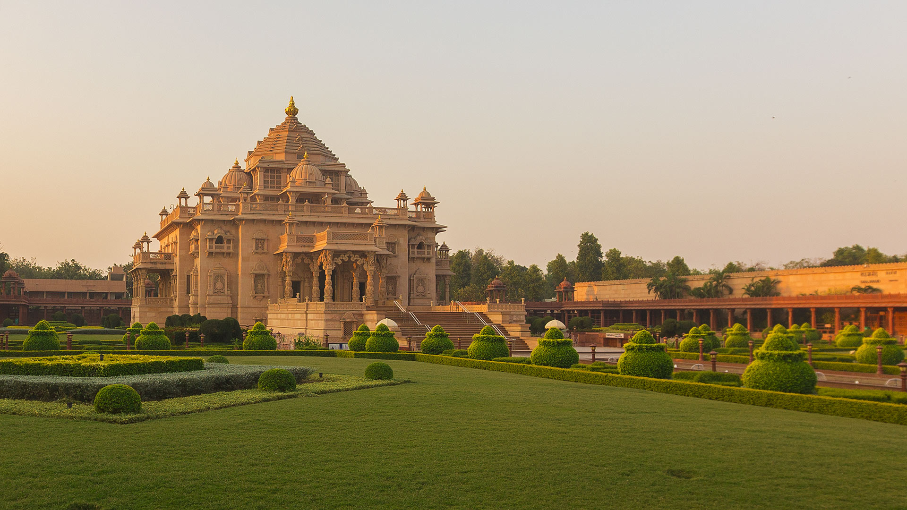
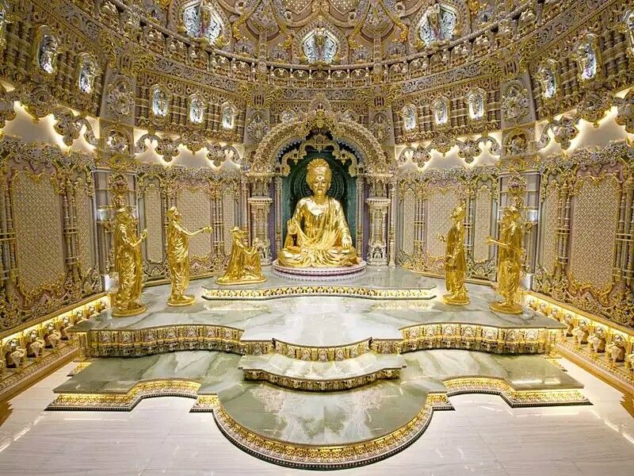
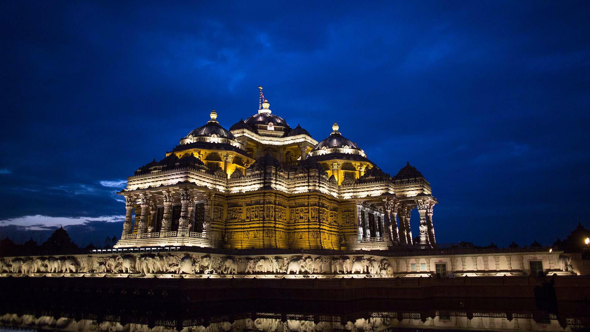

Akshardham is one of the best places for summer visit in India.
Apart from the picturesque enchantments,the destination is worship center.
If you are inquisitive about Hinduism, then you definitely visit this place.
How to reach there?
The temple is close to the border with Noida.The convenient and best way to visit Akshardham is by Delhi Metro
and the metro station which is nearest to this temple is "Akshardham Metro Station".
Top things to do?
There are lot of things you can do there and visit around for sure.
At the distance of 11kms ,there is Gurudwara Bangla Sahib where you can seek blessings.
India Gate, which is world's famous tourist spot, is just 15kms away from Akshardham temple.
If your seeking for pleasant and tranquil ambience, you can easily visit Lotus Temple which is at the distance of 14kms from
Akshardham temple.


